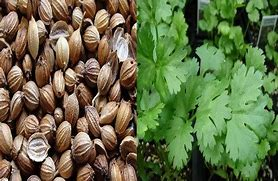

Basonym of Drug
Dhanyaka
Main Synonym
- Kustumburu
- Chatra
- Vittunnaka
Regional Name
- Bengali: Dhane
- Gujarati: Dhana, Kothamir
- Hindi: Dhaniya
- Kannada: Kothambari
- Tamil: Kottamalli
- English: Coriander
Botanical Name
Coriandrum sativum Linn.
Family
Umbelliferae
Classification (Gana)
Aacharya Charaka: Trushnanigrahana, Sitaprashamana
Aacharya Sushruta and Acharya Vagbhata: Guduchyadi Varga
External Morphology
20-30 inch high annual herb
Useful Parts
Important Phytoconstituent
- Bergapten
- Eugenol
- Carotene
- Coriandriole
- Citronellol
- Coriandrine
Rasa Panchak
- Rasa: Kashaya, Tikta, Madhura
- Guna: Laghu, Ruksha
- Virya: Ushna
- Vipaka: Madhura
Action
- Tridoshahara (Balances all three doshas)
Therapeutic Indication
- Jwarahara (Anti-pyretic)
- Chardihara (Anti-emetic)
- Dahaprashamana (Useful in burning sensations)
- Grahi (Reduces excessive secretions)
Therapeutic Uses
- Chardi: Dhanyaka mixed with sour and salty substances relieves vomiting.
- Aamvata: Dhanyaka and Sunthi powder in warm water are beneficial in rheumatoid arthritis.
- Atisara: Dhanyaka powder with buttermilk is effective in diarrhea.
- Jwara: Dhanyaka with Ushira and Parapata powder in warm water helps in fever.
Dose
- Powder: 3-6 gm
- Cold Infusion: 20-30 ml
Formulations
- Dhanyakadi Heema
- Dhanyakadi Leha
- Dhanyaka Kashaya
Adverse Effect
Not Known
Remedial Measure
Not required